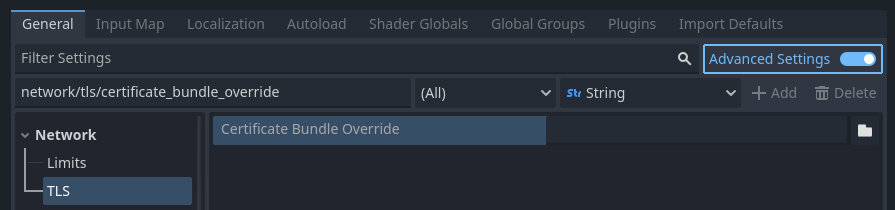

TLS/SSL certificates
Introduction
It is often desired to use TLS connections (also known as SSL connections) for communications to avoid "man in the middle" attacks. Godot has a connection wrapper, StreamPeerTLS, which can take a regular connection and add security around it. The HTTPClient and HTTPRequest classes also support HTTPS using this same wrapper.
Godot will try to use the TLS certificate bundle provided by the operating system, but also includes the TLS certificate bundle from Mozilla as a fallback.
You can alternatively force your own certificate bundle in the Project Settings:

Setting the TLS certificate bundle override project setting
When set, this file overrides the operating system provided bundle by default. This file should contain any number of public certificates in PEM format.
There are two ways to obtain certificates:
Generate a self-signed certificate
For most use cases, it's recommended to go through certificate authority as the process is free with certificate authorities such as Let's Encrypt. However, if using a certificate authority is not an option, then you can generate a self-signed certificate and tell the client to consider your self-signed certificate as trusted.
To create a self-signed certificate, generate a private and public key pair and add the public key (in PEM format) to the CRT file specified in the Project Settings.
Warning
The private key should only go to your server. The client must not have access to it: otherwise, the security of the certificate will be compromised.
Warning
When specifying a self-signed certificate as TLS bundle in the project settings, normal domain name validation is enforced via the certificate CN and alternative names. See TLSOptions to customize domain name validation.
For development purposes Godot can generate self-signed certificates via Crypto.generate_self_signed_certificate.
Alternatively, OpenSSL has some documentation about generating keys and certificates.